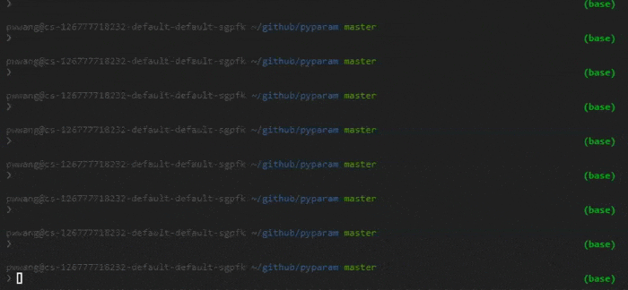

Home
pyparam


Powerful parameter processing
[!Warning] This package is deprecated. Please use argx instead.
Features
- Command line argument parser (with subcommand support)
- Rich type support, including
py,json,namespace, etc. - Type overwriting for parameters from command line
- Arbitrary parsing arguments from command line
- Automatic help page assembling
- Help page customization
- Callbacks for option values
- Parameter loading from configuration files
Installation
pip install -U pyparam
Documentation
https://pwwang.github.io/pyparam/
Basic usage
example.py
from rich import print
from pyparam import Params
# program name, otherwise sys.argv[0]
params = Params(prog='pyparam', desc="An example for %(prog)s")
# adding parameters
params.add_param('i, int', type=int,
desc="An integer argument.")
params.add_param('float', default=0.1, # type float implied
desc="A float argument.")
params.add_param('str', type=str,
desc="A str argument.")
params.add_param('flag', type=bool,
desc="A flag argument.")
params.add_param('c,count', type='count',
desc="A count argument.")
params.add_param('a', type='auto', type_frozen=False,
desc="Value will be automatically casted.")
params.add_param('py', type='py',
desc="Value will be evaluated by `ast.literal_eval`.")
params.add_param('json', type='json',
desc="Value will be converted using `json.loads`.")
params.add_param('list', type='list',
desc="Values will be accumulated.")
params.add_param('path', type='path', required=True,
desc="Value will be casted into `pathlib.Path`.",
callback=( # check if path exists
lambda path: ValueError('File does not exist.')
if not path.exists() else path
))
params.add_param('choice', type='choice', default='medium',
choices=['small', 'medium', 'large'],
desc="One of {choices}.")
params.add_param('config.ncores', default=1, # namespace config implied
argname_shorten=False,
desc='Number of cores to use.')
print(vars(params.parse()))
Try it out:
python example.py

$ python example.py \
-i2 \
--float 0.5 \
--str abc \
-ccc \
-a:int 1 \
--py "{1,2,3}" \
--json "{\"a\": 1}" \
--list 1 2 3 \
--choice large \
--path . \
--config.ncores 4
{
'i': 2,
'int': 2,
'float': 0.5,
'str': 'abc',
'flag': False,
'c': 3,
'count': 3,
'a': 1,
'py': {1, 2, 3},
'json': {'a': 1},
'list': [1, 2, 3],
'path': PosixPath('.'),
'choice': 'large',
'config': Namespace(ncores=4)
}
Try more features with:
python -m pyparam
Shell completions
Here is how the command completion in fish works:

Check the documentation, as well as the __main__.py to see how the completion works.